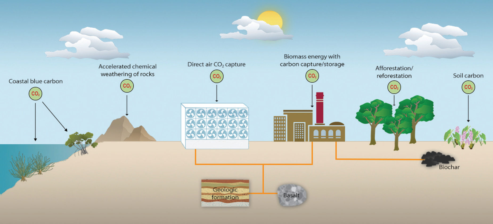
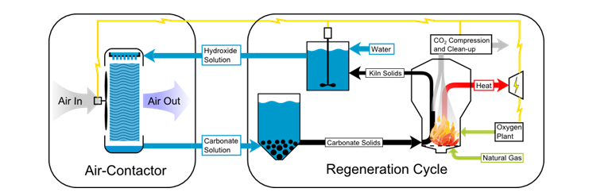
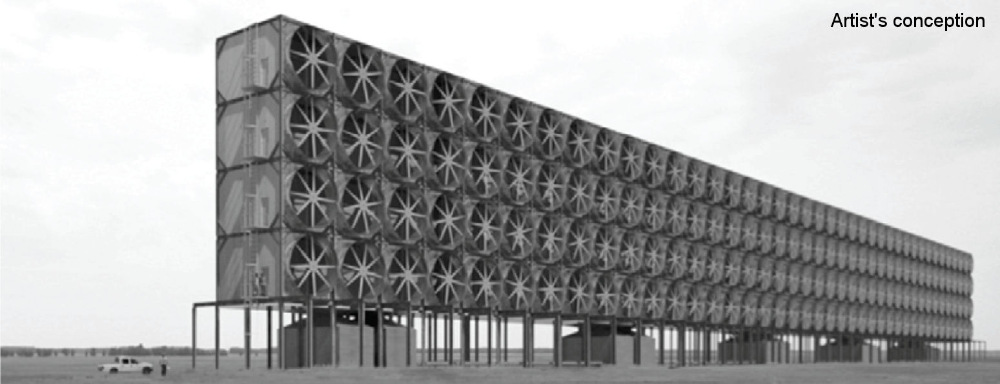
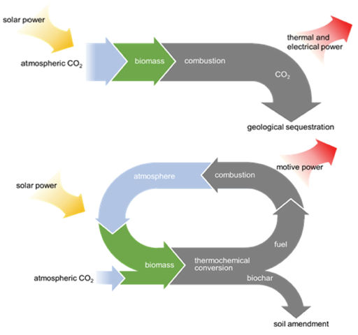

Geoengineering 2:
Air-Capture of CO2
EES 3310/5310
Global Climate Change
Jonathan Gilligan
Class #37: Friday, Nov. 16 2018
PDF: https://ees3310.jgilligan.org/Slides/Class_37/EES_3310_5310_Class_37_Slides.pdf Navigate slides: next: N or <space>; previous: P or <backspace>
Also: up, down, left, right arrows; overview: o; help: ?
Update on Lab Project Assignment
- Original assignment said to analyze the feasibility of both the country’s 2030 goal under the Paris agreement and the 2050 goal that you come up with.
- Revised assignment:
- You only need to analyze your 2050 goal.
- You do not need to analyze the feasibility of the 2030 goal.
Albedo Control as Technological Fix
Albedo Control as Technological Fix
- Cause-Effect Relationship?
- Mismatched changes: incoming shortwave vs. outgoing longwave
- Feedbacks
- Temperature vs. precipitation
- Geographic distribution
- Ocean acidification
- Assessable Effects?
- No way to test it on small scale
- No way to assess unintended consequences
- Established Technological Base?
- No “practice earth” for testing
- Can’t build it incrementally
Air-capture of CO2
Technologies

National Research Council, Negative Emissions Technologies and Reliable Sequestration, (2018)
Trees
- Trees capture around 920 metric tons of CO2 per sq. mile per year,
for 20–50 years - US emissions: 6.5 billion metric tons per year
- Plant 7.1 million square miles every 35 years
- 200,000 square miles per year (a circle 250 miles across)
- Tennessee = 109,000 square miles
- Texas = 270,000 square miles
- Lower 48 = 3 million square miles
- Plant 7.1 million square miles every 35 years
Forests and Soil
Potential capture/storage rates (GT CO2 per year)
| Technology | Cost | US | Global |
|---|---|---|---|
| Forest Growth | L | 0.15 | 1.0 |
| Forest Management | L | 0.10 | 1.5 |
| Agriculture/Soils | L to M | 0.25 | 3.0 |
| Total | 0.50 | 5.5 |
National Research Council, Negative Emissions Technologies and Reliable Sequestration, (2018)
Direct Air-Capture
(“Artificial Trees”)
Direct Air-Capture (“Artificial Trees”)


National Research Council, Negative Emissions Technologies and Reliable Sequestration, (2018)
Feasibiliity of Direct Air-Capture
- Possible in principle
- Hasn’t been tried on large scale
- Very expensive
- Why it’s not hopeless:
- National Academy Estimates: $90–600/ton
- Capture from smokestack uses 30% of energy from power plant
- CO2 in air is 300 times more dilute
- Doesn’t take 300 times more energy
- Takes 1.5–3.4 times as much
Bioenergy with
Carbon Capture and Storage (BECCS)
Bioenergy with
Carbon Capture and Storage (BECCS)

National Research Council, Negative Emissions Technologies and Reliable Sequestration, (2018)
Bioenergy with
Carbon Capture and Storage (BECCS)
- Biomass production for fuel is already in wide use
- Carbon capture is not currently used, but would be three times as energy-efficient as direct air capture.
- Estimated costs:
- For power plants: $70/ton
- For vehicles: $40–130/ton
- Concerns about impact of converting so much land to energy production.
Feasibility of Air Capture
Cost & Capacity of Air Capture
| Technology | US | Global | Cost |
|---|---|---|---|
| Coastal | 0.02 | 0.13 | $0 |
| Forest Growth | 0.15 | 1.00 | $70–90 |
| Forest Management | 0.10 | 1.50 | $250–500 |
| Agriculture/Soils | 0.25 | 3.00 | $0–50 |
| BECCS | 0.50 | 4.35 | $30–130 |
| Direct Air Capture | NA | NA | $90–600 |
| Total | 1.00 | 9.98 |
Cost of Air Capture
- Cost to capture all human emission:
- At $140/metric ton:
- $6–8 trillion: 10–15% of world GDP
- At $27/metric ton
- $1.2–1.5 trillion: 2–3% of world GDP
- At $140/metric ton:
- Is it worth it?
- Stern: “If mitigation costs 1% of world GDP by 2100 … this is equivalent to growth rate dropping from 2.50% to 2.49%”
- GDP in 2100 would still be 950% greater than today.
Air-Capture as Technological Fix
- Cause-Effect Relationship?
- Yes: Removing CO2 would cancel adding CO2
- Assessable Effects?
- Yes: We can measure CO2 concentrations
(almost 70 years experience)
- Yes: We can measure CO2 concentrations
- Established technological base?
- Laboratory projects to build on
- Challenge is scaling up
- What’s missing?
- Where to store CO2 after we capture it?
Scaling Up
An apparatus the size of a semi trailer could remove a ton of carbon dioxide per day, or 365 tons a year.
The world’s cars, planes, refineries, and power plants now produce about thirty six billion tons of CO2 annually, so …
… if you built a hundred million trailer-size units you could actually keep up with current emissions.
— Elizabeth Kolbert, The New Yorker, 20 Nov. 2017
Should Geoengineering
Be on the Table?
Should Geoengineering
Be on the Table?
- Playing God argument
- Moral hazard argument
- Illusion of safety argument
Recent Scholarship
Negative-emission technologies are not an insurance policy, but rather an unjust and high-stakes gamble. There is a real risk they will be unable to deliver on the scale of their promise.
The promise of … negative-emission technologies is more politically appealing than … rapid and deep mitigation now.
If we rely on [negative-emission technologies] and they are … unsuccessful at removing CO2 from the atmosphere at the levels assumed, society will be locked into a high-temperature pathway.
— K. Anderson & G. Peters, Science 354, 182 (14 Oct., 2016)
Context
The IPCC considered more than 1000 possible [emissions] scenarios.
Of these, only 116 limit warming to below [2°C], and of these 108 involve negative emissions.
In many below-two-degree scenarios, the quantity of negative emissions … reaches the same order of magnitude as the “positive” emissions being produced today.
— E. Kolbert, The New Yorker, 20 Nov. 2017
You might say it’s against my self-interest to say it,
but I think that, in the near-term, talking about carbon removal is silly,
because it almost certainly is cheaper to cut emissions now
than to do large-scale carbon removal.
— David Keith,
Founder, Carbon Engineering
(carbon capture company)
The punch line is, it doesn’t matter. We actually need to do direct air capture,
so we need to create technologies to do that. Whether it’s smart or not,
whether it’s optimized or not, whether it’s the lowest-cost pathway or not,
we know we need to do it.
— Julio Friedmann
former Principal Deputy Assistant Secretary,
Office of Fossil Energy,
U.S. Department of Energy
National Research Council Report (2018)
Negative emissions technologies are best viewed as a component of the mitigation portfolio, rather than a way to decrease atmospheric concentrations of carbon dioxide only after anthropogenic emissions have been eliminated.
National Research Council Report (2018)

National Research Council, Negative Emissions Technologies and Reliable Sequestration, (2018)
Comparing Imperfect Solutions
- Mitigation
- Cut emissions
- Geoengineering
- Adaptation
- Do nothing
“We have three options:
mitigation, adaptation, and suffering”
— Prof. Lonnie Thompson